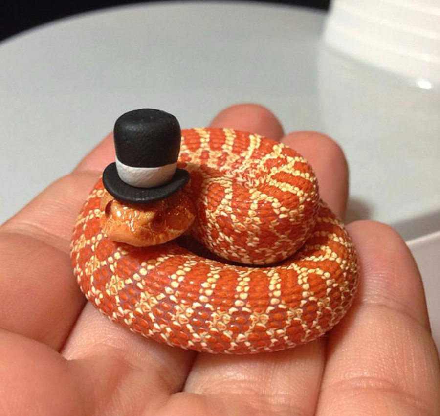

Las serpientes (Serpentes) u ofidios (Ophidia) son un suborden de saurópsidos (reptiles) diápsidos pertenecientes al orden Squamata, del superorden Lepidosauria, caracterizado por la ausencia de patas (la pitón mantiene diminutas extremidades vestigiales, herencia de su pasado evolutivo) y el cuerpo muy alargado. Se originaron en el período Cretácico. Algunas realizan mordeduras venenosas, como las cobras y las víboras, para matar a sus presas y posteriormente ingerirlas. Otras serpientes, como las boas y pitones, matan a sus presas por constricción. Se reconocen más de 450 géneros y de 3460 especies. Se cree que las serpientes derivan de algún tipo de lagarto, pero los detalles concretos de su origen no están claros.
